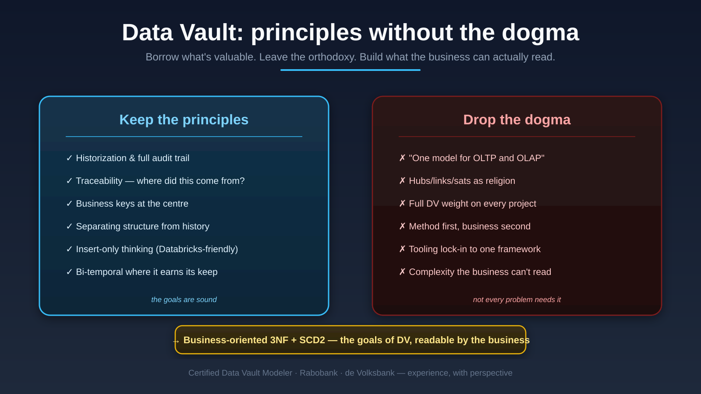

Expertise · Data Vault
I'm a Certified Data Vault Modeler, and I've built Data Vault at scale at Rabobank and de Volksbank. That's exactly why I'm careful with it. Data Vault gets a lot right — historization, traceability, business keys — but it's a means, not an end. The job is to borrow what's valuable and leave the orthodoxy behind, so the result is something the business can actually read.

My stance
Take Data Vault's best practices — historization, traceability, separating keys from change — but you don't need the full architecture to get them. For many organisations, business-oriented 3NF with bi-temporal SCD2 reaches the same goals with far less to explain.
Data Vault's promise of a single universal model rarely holds in practice. Better to accept it and design honestly: an integration layer that's auditable, plus analytics layers shaped for their job. Honesty beats a universal model that fights you.
Lighter patterns (like Hook) are sometimes the business-friendlier fit; full Data Vault is sometimes exactly right. The skill is reading the context and choosing — not applying one method as religion.
For teams stuck under Data Vault complexity, there's a controlled route out: migrate from Data Vault to bi-temporal 3NF, model-first, with the metadata driving the lifecycle. Simpler, faster, and still fully historized.
From the writing
That's a conversation I have a lot. Honest answer, grounded in having built it both ways.
Start a conversation